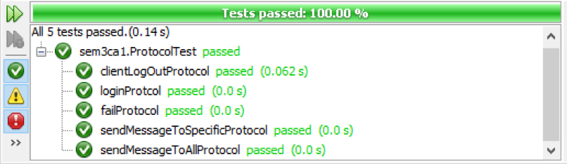
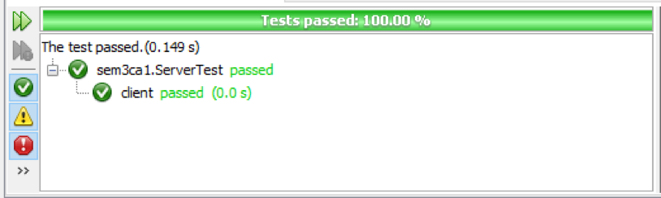
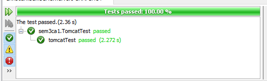
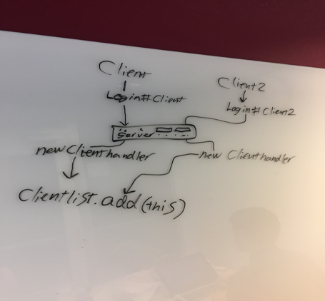

The server is running on server address 139.59.148.148 at port 8081
Test and test results: Link to source-code for the test:
Link to tests on github.
We have made tests on the protocol. We have tested for the inputs and outputs for the different clients when a client interacts.
We have tested on the different responds you can see on the img.

Our test passes when we use the protocols properties right.

We have also tested the server when it runs on its own thread, and a client connecting in its own thread. Our test passed so our server can run on a single thread and get
input from clients”other threads”.
Here we see the last test, where we connect to tomcat at the digital ocean server.

The server is by default connecting to port 8081.
Login cmd:
The server contains a list of clienthandlers, which are generated when the user is logging in. When a new client has logged in successfully, the client is added to the a list of clienthandlers as a new clienthandler (see picture1).→

This only happens if the username doesn’t exist. If it exists, the socket is closed and the client gets the message “FAIL”.
When a user is logged in he has two options; he can either send to all or to a specific client. A message contains 3 arguments, split by a #.
| Date | Thomas Staal | Mads Ibsen | Christian Øst-Jacobsen |
|---|---|---|---|
| 13/2 |
- Preperation of github repository - Prepared serverclass for connection. |
||
| 14/2 | - Work on clienthandlig and made switch cases | - Work on observers. - How to handle added and deleted users |
- Created basic server setup (connection) - Created Clientlist, addClient and delete client method. |
| 15/2 | - Made the client. - Helped christian with method and protocol |
- Work on client - Finished working GUI - Bugfixes in protocol - Fixed problem with exceptions in login - Fixed problem with UPDATE# and OK# |
- Created sentToSpecific method. - Implemented #update, #delete and ok# protocol. - Devided pieces of logic into smaller methods. |
| 16/2 | Made junit and other tests. | - Work on website for documentation - implementation of the FAIL message |
Rapport writing (How to use, technical design and diagrams). |
| 17/2 | - Made our project run on digital ocean. | - Created the documentation webpage with css - Created the downloadable client.jar (connect at "139.59.148.148" and port 8081.) |
I think this module has been well organized and it was nice for
me to get new exercises everyday, to sum up the stuff from each day.
It has been a great help for me, that Jens has walked through the solutions
every day, to make sure that no students are left behind. It has been nice
to be included so much in the lessons. Thank you for a nice and challenging first module.